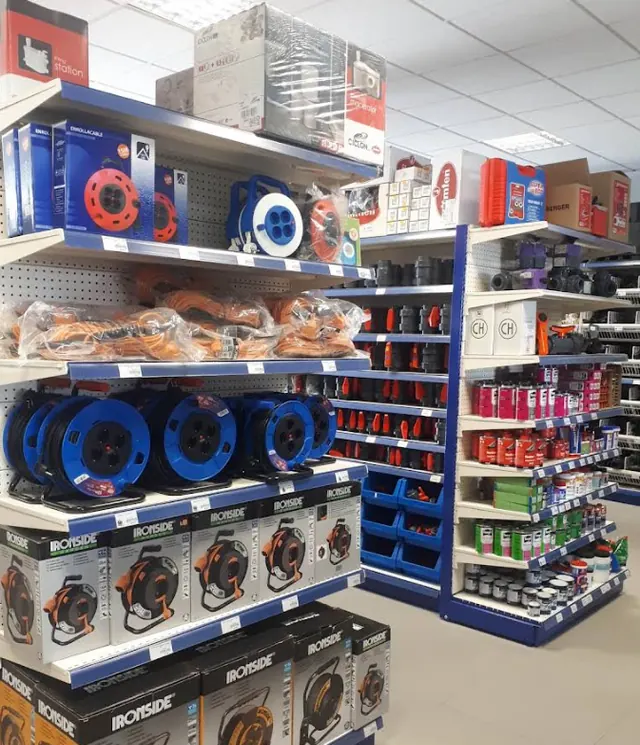
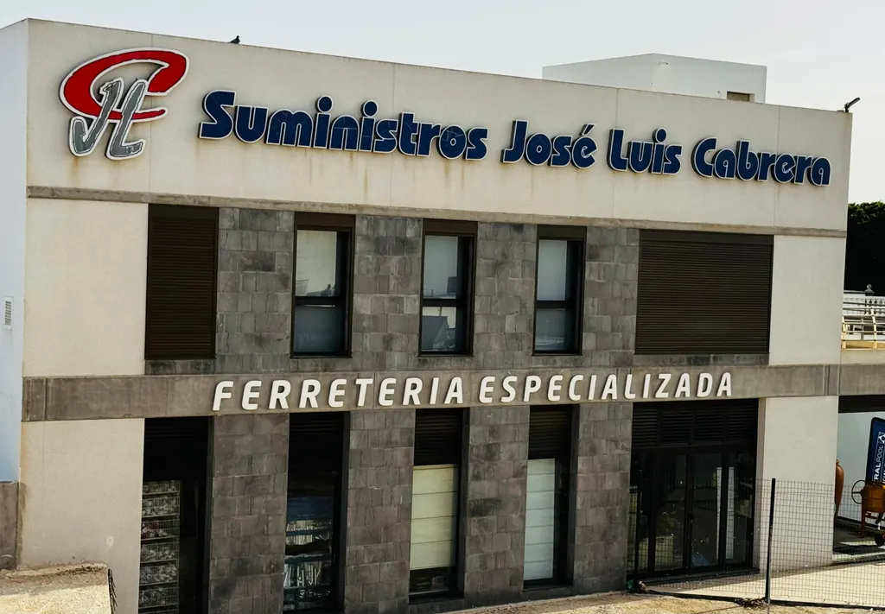
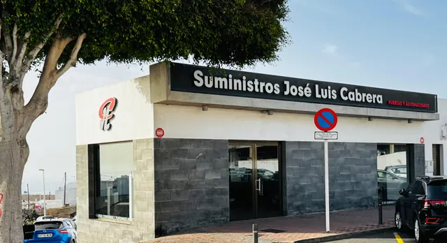
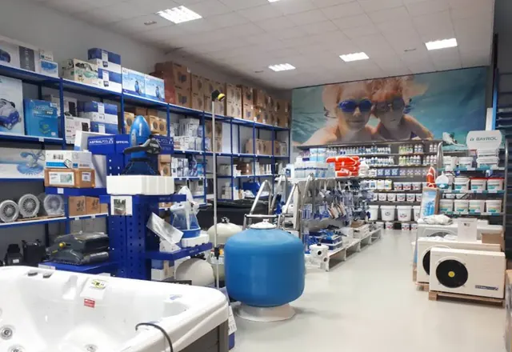
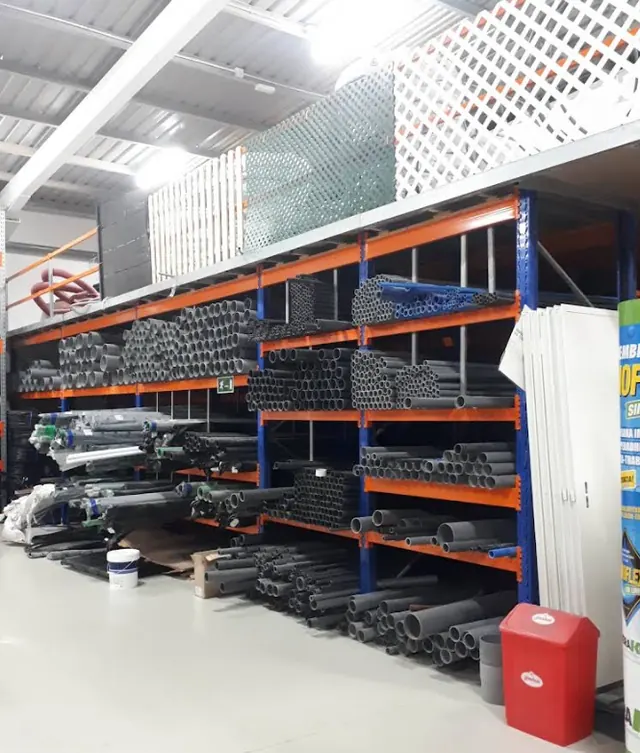
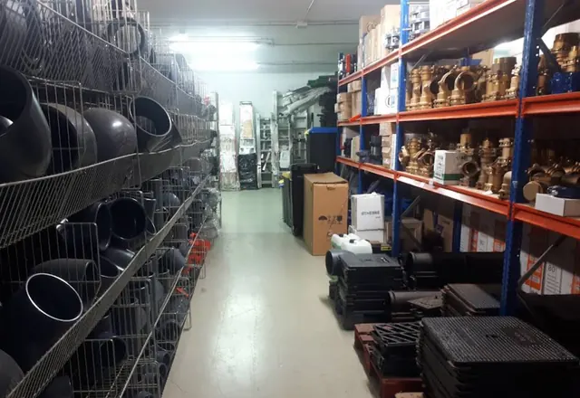
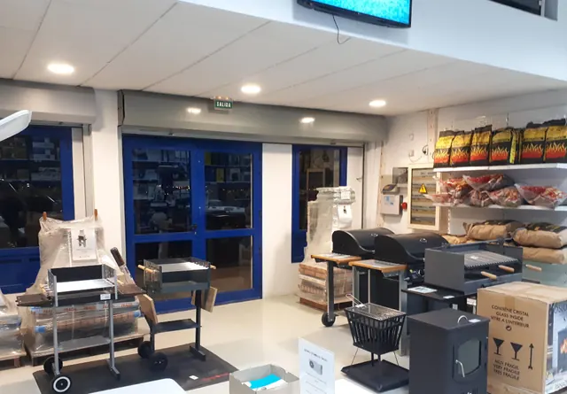
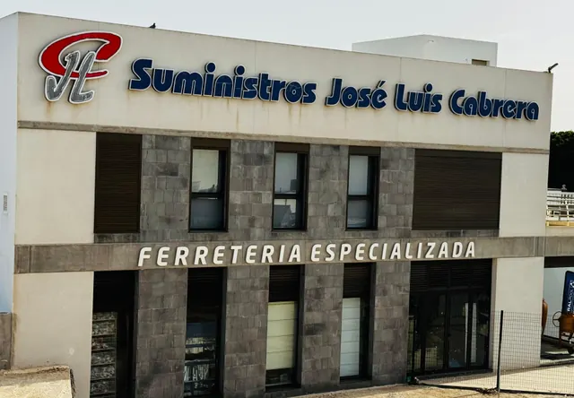
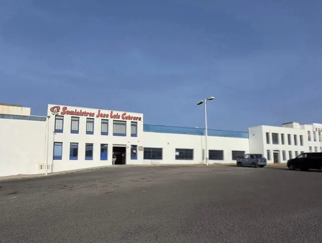

Ferretería y herramienta
Del tornillo que te falta a la herramienta profesional, en el mismo mostrador.
Todo lo que tu obra necesita.

Ocho especialidades, el mismo mostrador.

Del tornillo que te falta a la herramienta profesional, en el mismo mostrador.
Para dentro, para fuera y para proteger, con consejo en tienda.
Vidrio y cristal para tu obra, con asesoramiento en tienda.

Nuestra especialidad. Míralas en persona en la exposición de Tías.

Filtración, bombas y tratamiento del agua: todo lo que tu piscina pide.

Tubería, accesorios y bombeo, con stock de sobra para la obra.

Fundición, latón y material de obra para que el trabajo no se pare.

Barbacoas, estufas y riego para disfrutar de casa.
Dos tiendas y una exposición, repartidas por la isla.

Tienda y oficinas
C. Islote de Hilario, s/n
Tienda
C. Letonia, 18Puertas y automatismos
C. Libertad, 35Lunes a viernes de 7:30 a 17:00. Sábados de 8:00 a 13:00.
Llámanos, escríbenos o síguenos.
Suministros José Luis Cabrera, es una empresa familiar Canaria, la cual nace en la década de los 90, después de una larga trayectoria de su socio fundador. Nace con el firme propósito de dar soluciones a sus clientes, con la máxima garantía de calidad y compromiso, especialistas en puertas de garaje y automatismos, piscinas, fontanería, tuberías de PVC, ferretería, fundición y construcción. Actualmente con 2 puntos de venta y una exposición, en la isla.
Sitio genial para comprar lo necesario para tus reformas y arreglos en casa. Calidad a buen precio
Mucha variedad, buena atención y calidad/precio
Siempre compramos allí los artículos de fontanería, ferretería, piscinas etc.
Si te falta cualquier cosa.. allí lo encuentras y si nooo... te lo consiguen
Marcas con las que trabajamos cada día.